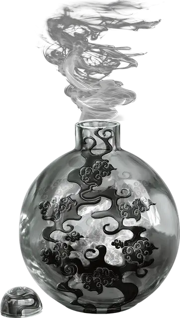

Вечнодымящаяся бутылка
Eversmoking Bottle
Чудесный предмет, необычный

Рекомендованная стоимость 400 зм
Действием Магия вы можете открыть или закрыть эту бутылку.
При открытии бутылки из неё вырывается густой дым, образуя облако в области исходящей от бутылки 60-футовой Эманации. Эта область дыма считается Сильно заслонённой.
Каждую минуту, пока бутыль остаётся открытой, размер Эманации увеличивается на 10 футов, пока не достигнет максимального размера в 120 футов.
Закрытие бутыли фиксирует облако на месте на 10 минут, по истечении которых оно рассеивается. Сильный ветер (как созданный заклинанием Порыв ветра) рассеивает облако через 1 минуту.